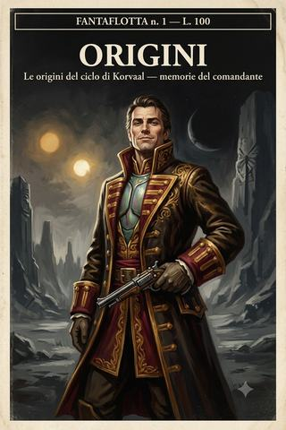

Origini · racconto 3 di 3
Una nuova rotta
Nemici che non muoiono, un inquisitore morto con un segreto tra le dita, e la scoperta che l’Imperium si seppellisce da solo.
- ≈ 32 min di lettura
- dalle partite a Rogue Trader
- il volume in EPUB, 2,0 MB
Memorie del comandante Korvaal — racconto terzo. Corrette di mio pugno dove i fatti mancavano di grandezza.
Anno 38012 dell’Era Imperiale.
Prologo — Il mondo dei dannati
Ogni grande uomo ha un luogo in cui, guardandosi indietro, riconosce l’istante in cui ha smesso di essere ciò che era e ha cominciato a essere ciò che sarebbe diventato. Per me quel luogo è un mondo-carcere dietro una tempesta, un mondo di quindici milioni di dannati, chiuso al resto del creato da mezzo secolo, di nome Morros Lacryma.
Vi giunsi da corsaro. Ne ripartii da qualcos’altro.
Non so indicare l’istante esatto — le grandi trasformazioni non hanno un istante, hanno una china —, ma so che a Morros Lacryma qualcosa in me si spostò per sempre. Vi ero entrato inseguendo un bottino, come un mercante insegue un carico. Ne uscii inseguendo un disegno, come un dio insegue una creazione. La differenza è tutta lì, ed è la differenza che separa i tre racconti che seguono da tutto ciò che li precede nella mia vita. Prima di quel mondo, ero un uomo molto ricco e molto vecchio che voleva riprendersi una nave perduta. Dopo, ero un uomo che aveva intravisto, sotto la superficie della galassia, l’ossatura nascosta del potere — gli psionici, le tecniche per soggiogarli, le tombe piene di segreti, l’Imperium che si seppellisce da solo — e aveva deciso, con la calma di chi sceglie una professione, che quell’ossatura sarebbe stata sua.
Non perché vi conquistai un regno — anche se, di fatto, un regno vi conquistai. Non perché vi feci il mio più grande bottino — anche se lo feci. Ma perché vi dissotterrai una verità, sepolta apposta nel ghiaccio da millenni, e capii una cosa che da allora ha guidato ogni mia scelta: che sotto la vernice dell’Imperium, sotto le sue preghiere e i suoi editti, giace una galassia di segreti seppelliti perché nessuno tornasse a prenderli. E che a un uomo abbastanza audace da scavarli, quei segreti fruttano più di ogni rotta commerciale.
Questo racconto chiude le mie Origini. È il più oscuro dei tre, e il più mio. Vi troverete nemici che non muoiono, un fuoco calato dall’orbita, un inquisitore morto da millenni con un segreto tra le dita gelate, e il tradimento che mi costò il mio magos. E vi troverete, alla fine, l’uomo che ero destinato a diventare, già visibile — a chi sa guardare — sotto il mercante avido che allora fingevo ancora di essere soltanto.
Capitolo primo — I nemici che non muoiono
Dalla cronaca ufficiale della Casa di Korvaal. Il comandante affrontò un nemico che la morte stessa aveva dimenticato.
La mia navigatrice aprì una rotta attraverso il Vortice Ululante che nessuno percorreva da cinquant’anni. Era una donna dal dono singolare, e già allora avvertivo attorno a lei qualcosa di storto, un prezzo non ancora esatto; ma un comandante usa gli strumenti che ha, e mi guardai bene dal chiedermi troppo a fondo perché il suo dono funzionasse così bene proprio là dove il warp era più violento.1
Ma devo, prima di raccontare quella traversata, correggere un particolare che la cronaca ufficiale sbaglia, e sbagliandolo mi ruba la metà migliore del merito. Nel Vortice Ululante non entrai col Pretoriano Eterno. Vi entrai con la Ares.2
La Ares era una piccola nave da esplorazione profonda del Mechanicus, dominio geloso e assoluto del mio magos Kelbor Hel: modesta di stazza, e tuttavia capace, grazie a motori warp compatti come il cuore di una bestia, di attraversare la galassia da parte a parte; posseduta a ogni giuntura da spiriti-guardiani asserviti alla sola volontà di Hel; e dentro, a detta dei pochi che vi avevano messo piede prima di me, claustrofobica e illogica, come concepita apposta per confondere chiunque non ne fosse il padrone. Un vascello sgradevole. Ma piccolo, e — dettaglio che a me importava più di ogni altro — sacrificabile.
Ed è qui la finezza del calcolo che offro ai posteri, perché è puro Korvaal, e vale più di mille battaglie. Un uomo impaziente avrebbe scagliato il Pretoriano dentro la tempesta, rischiando in un colpo solo diecimila anime e la nave di tutta la sua fortuna. Io no. Lasciai il Pretoriano Eterno indietro, di guardia alle mie operazioni di carico, al sicuro, dove le navi grandi e costose devono stare; e mandai avanti la piccola Ares a fare da battistrada nell’urlo — a trovare, col proprio scafo e col proprio rischio, la sola via percorribile in mezzo alla tempesta. Che poi, una volta tracciata quella via, il Pretoriano avrebbe potuto seguire con minor pericolo e pari gloria. È l’arte suprema del comando, e la consegno ai posteri incisa: far correre il rischio allo strumento meno prezioso, e riscuotere il merito col più prezioso. I generali, quando vogliono aprirsi una strada, vi mandano avanti i propri figli. Io vi mandai avanti la nave di un altro. Si riconosce da queste piccole economie chi è nato per comandare e chi per obbedire.
La traversata del Vortice Ululante merita dunque una parola, perché fu, a suo modo, un miracolo, e i miracoli — quando accadono per opera dei propri strumenti e non per grazia di un dio — vanno registrati con precisione. Il Vortice era una tempesta warp vecchia di mezzo secolo, così violenta da aver inghiottito ogni nave mandata prima della mia: un ribollire di realtà malata attraverso cui nessun navigatore imperiale aveva più trovato la via. La mia la trovò. Sedeva sul suo trono di navigazione, chiusa in sé, e guidava la Ares dentro l’occhio dell’urlo con una sicurezza che a un uomo attento avrebbe dovuto gelare il sangue più della tempesta stessa. Perché nessuna dote imperiale spiega quella sicurezza. Un navigatore autentico, davanti al Vortice Ululante, prega, suda, esita, si perde. La mia vi entrò come si entra in una stanza di casa propria — e la sicurezza con cui una donna attraversa l’inferno è, se ci si pensa, la migliore prova che con l’inferno abbia una qualche parentela. Lo notai. Come notavo tutto. E come tutto ciò che notavo e non mi conveniva ancora affrontare, lo riposi nella parte fredda di me, in attesa del giorno in cui il conto sarebbe giunto a scadenza. Con lei giunse presto, e caro, come i posteri sapranno. Ma quel giorno, davanti alla porta del mondo dei dannati che lei sola sapeva aprirmi, la guardai fare l’impossibile e mi limitai a incassare il profitto, con la serenità del creditore che non ha ancora capito di essere anche debitore.
Sbarcai su un mondo di nebbia e polvere, dove i due soli — se ce n’erano — non arrivavano, e la visibilità si misurava in passi. E lì incontrai un nemico che non avevo mai incontrato: nemici che non morivano.
Un mondo di dannati chiuso da mezzo secolo non è un mondo vuoto. È un mondo fermentato. Quindici milioni di prigionieri, lasciati soli senza guardie né rifornimenti né speranza, non si estinguono educatamente: si trasformano. In cosa, lo scoprii scendendo in quella nebbia. In tribù, in culti, in cose che avevano smesso di essere del tutto umane, tenute in vita da riti che è meglio non descrivere e nutrite da una fame che non era più solo di cibo. La nebbia stessa pareva partecipe della loro follia: densa, grassa, con un odore dolciastro di marcio sotto cui si nascondeva qualcosa di peggiore. I miei mercenari, uomini induriti che ne avevano viste di tutti i colori, avanzavano con quel silenzio teso che negli uomini d’arme sostituisce la preghiera. E la nebbia inghiottiva i loro passi, e restituiva, di quando in quando, un rumore che non avrebbe dovuto esserci.
Uomini in fiamme che avanzavano ancora. Corpi crivellati che non cadevano. I miei mercenari li colpivano a bruciapelo, e quelli continuavano a venire, e il panico serpeggiava, e alcuni furono travolti prima che capissimo. Solo il fuoco li fermava, a lungo, e nemmeno sempre. Dietro di loro, una barriera psichica invisibile che uccideva col solo contatto e spegneva ogni colpo. È una cosa particolare, la paura che coglie uomini valorosi davanti a un nemico che non muore. Un guerriero fa pace con la morte — la propria e quella altrui —, ma non con la sua sospensione. Uccidere un uomo e vederlo continuare a camminare toglie al soldato l’unica certezza su cui poggia il suo mestiere: che una cosa colpita abbastanza cade. Tolta quella, cade lui. Vidi mercenari incrollabili scaricare l’intero caricatore e poi, semplicemente, voltarsi e correre — non per viltà, ma perché la loro mente si rifiutava di continuare a giocare a un gioco di cui qualcuno aveva cambiato le regole.
Li vincemmo, come vinco sempre — con la potenza di fuoco del mio tecnoprete, con una granata piazzata al centro esatto della loro formazione dalla mia guardia, con la fede e la spada del mio prete. E dietro la barriera trovammo la sua causa: un culto caotico, intento a squarciare il velo della realtà, cultisti raccolti attorno a un sacrificio, sul punto di aprire un varco all’inferno.
Era, quel culto, ciò in cui degenera l’uomo lasciato solo troppo a lungo con la propria disperazione. Quindici milioni di dannati, chiusi da mezzo secolo dietro una tempesta, senza dèi che li ascoltassero e senza padroni che li temessero, avevano fatto ciò che l’uomo fa sempre quando l’Imperium lo abbandona: si erano cercati altri dèi. E li avevano trovati, come li si trova sempre, nel posto peggiore — nell’immaterium, dove le potenze che chiamiamo demoni attendono pazienti che qualcuno, abbastanza disperato, apra loro la porta dall’interno. I cultisti che trovai in quella nebbia non erano guerrieri: erano uomini rotti, ridotti a strumenti di qualcosa che avevano invocato senza capirlo, radunati attorno al loro rito osceno con la febbre negli occhi di chi ha smesso di sperare in questo mondo e ha deciso di consegnarsi a un altro. Provai per loro non pietà — non ne ho — ma un fastidio quasi estetico: perché aprire un varco all’inferno è, in fondo, un atto di resa, e io disprezzo la resa in ogni sua forma, anche quella cosmica. Chi spalanca la porta ai demoni ha smesso di volere per sé, e ha cominciato a volere per loro. È l’esatto contrario di ciò che sono io, che non ho mai voluto se non per me, e che proprio per questo non sarei mai stato preda di simili porte. L’inferno recluta i disperati. Io non lo sono mai stato un solo giorno della mia lunghissima vita, ed è forse questa, più della mia astuzia, la ragione per cui gli sono sempre sfuggito.
Fu la mia navigatrice a chiuderlo — a modo suo. Aprì l’occhio che teneva nascosto sulla fronte e incenerì i cultisti con un fuoco che non veniva da questo mondo. Vidi, per un istante, la fenditura che avevano quasi spalancato: e dall’altra parte, innumerevoli demoni che premevano, guidati da una grande figura piumata ribollente di potere. Poi il varco collassò, e della bolla di realtà dislocata non restò che un cerchio di terreno nero e vetrificato, come fuso da un olocausto.
Guardai la mia navigatrice richiudere il suo occhio, e non dissi nulla. Vidi però ciò che vidi, e lo annotai nella parte fredda di me che non dimentica mai: che quel fuoco non era il dono innocente di una navigatrice imperiale, e che una donna capace di incenerire un culto caotico con un occhio nascosto sulla fronte era, con ogni probabilità, essa stessa qualcosa che l’Inquisizione avrebbe voluto morto. Un comandante saggio sa quando una vittoria puzza di ciò che l’ha resa possibile, e sa anche che non è ancora il momento di occuparsene. Rimandai il conto. I conti, con lei, si sarebbero pagati più tardi. Con gli interessi.
Capitolo secondo — Il fuoco dall’alto
Dalla cronaca ufficiale della Casa di Korvaal. Il comandante pronunciò il proprio giudizio su un luogo corrotto, e lo eseguì.
Alcune questioni teologiche si risolvono con la disputa. Altre con l’esorcismo. Io ne ho una terza soluzione, che preferisco a entrambe, perché è più rapida e non lascia repliche: la risolvo dall’orbita, e con un cratere.
Il mio siniscalco — che aveva ben operato in mia assenza, come sempre fa chi conta bene — aveva già predisposto il rimedio. In orbita a Morros Lacryma trainavamo un asteroide, e da esso si ricavavano rozzi geoidi da lanciare come proiettili sul pianeta. Ne era già partito uno, diretto proprio al sito che avevamo appena esplorato, con un unico scopo, annotato senza fronzoli nei registri del mio siniscalco: sterilizzazione totale.
Diciotto ore, e del luogo dove il culto aveva quasi spalancato l’inferno non sarebbe rimasto che roccia fusa.
Voglio che i posteri apprezzino l’eleganza di quel dispositivo, perché è pura poesia contabile, ed è la firma di quel siniscalco grigio di cui non ricordo mai il nome e a cui devo, lo ammetto solo qui, più di quanto ammetta altrove. Non avevo portato con me un arsenale da bombardamento planetario — sarebbe stato dispendioso, e un avido non spreca. Avevo, in orbita, un semplice asteroide al traino, di quelli che si rimorchiano per mille usi. E il mio siniscalco, con la fredda ingegnosità di chi trasforma qualunque cosa in uno strumento, ne aveva fatto ricavare rozzi geoidi — massi sagomati, proiettili di pietra — da lasciar cadere sul pianeta come pietre in un pozzo. Nessuna testata costosa. Nessuna munizione sacra da giustificare ai preti. Solo la gravità, che è gratuita, e una roccia, che è quasi gratuita, e il calcolo esatto di dove lasciarla cadere, che è l’unica cosa che costa, e costa soltanto intelligenza. Trasformare un sasso e la gravità in un’arma capace di sterilizzare un sito è, ve lo assicuro, una forma di genio che i generali con le loro flotte costose non conoscono. Il mio siniscalco la possedeva. La annotava nei registri senza fronzoli, «sterilizzazione totale», con la stessa calligrafia con cui annotava il consumo di grano. E questo, più di ogni fiotto di sangue, mi diceva chi fosse davvero quell’uomo grigio: uno che sapeva ridurre lo sterminio a una voce di bilancio, e proprio per questo lo eseguiva senza mai un tremito.
Lo confesso ai posteri come una delle decisioni di cui vado più fiero, e non per la sua ferocia — la ferocia è a buon mercato, la sfoggia qualunque tiranno da strapazzo —, ma per la sua economia. Non c’è modo più pulito di chiudere una ferita nel reale che cauterizzarla da lontano. Non guardai nemmeno l’impatto. Un comandante che ha ordinato un fuoco non ha bisogno di ammirarlo; ha già altro da fare, e il fuoco, se ben ordinato, si ammira da solo.3
Ma prima che il cielo cadesse su quel sito, avevo altre cose da dissotterrare. Perché un mondo chiuso da cinquant’anni non offre i suoi segreti sopra la superficie, dove chiunque potrebbe averli già presi. Li nasconde in basso. Nel ghiaccio. E laggiù, al polo di quel mondo di dannati, mi aspettava la verità.
Capitolo terzo — Il ghiaccio del polo
Dalla cronaca ufficiale della Casa di Korvaal. Il comandante violò un sepolcro di millenni, e ne trasse i segreti.
Ma prima di scendere nel ghiaccio devo dire dove fosse, ormai, il Pretoriano Eterno. La Ares aveva trovato la via nel Vortice, e pagato con lo scafo la propria audacia: ne era uscita con una breccia nella fiancata, i propulsori warp fiaccati, lo scudo Gellar incrinato a un soffio dal collasso. Fu allora che chiamai a me la nave grande. Il Pretoriano seguì docile la rotta che la piccola Ares aveva tracciato col proprio sangue di metallo, e sopraggiunse infine in orbita a Morros Lacryma a fare ciò che le navi grandi sanno fare meglio di ogni altra: rimorchiare, riparare, incombere. Da quel momento ebbi, in quel cielo di dannati, entrambe le mie navi — la piccola che aveva osato e la grande che veniva a raccogliere il frutto dell’osare —, ed è, se ci si pensa, l’immagine esatta di come ho condotto ogni impresa della mia vita: che qualcosa di più piccolo apra la strada, e che io la percorra poi con tutto il peso della mia grandezza.
Al polo australe, sepolta sotto i ghiacci di millenni, giaceva una base mechanicus abbandonata. Vi entrai. E ciò che vi trovai giustifica da solo l’intera spedizione.
Il freddo, laggiù, non era il semplice freddo del polo. Era un freddo conservante, un gelo che non uccideva soltanto ma imbalsamava, che teneva ogni cosa esattamente com’era nell’istante della catastrofe, come un insetto nell’ambra. Camminavamo tra scene di morte vecchie di millenni ma fresche come di ieri: un servitore riverso a metà di un gesto mai finito, un terminale ancora acceso di una luce fioca e paziente, un’orma nel ghiaccio che nessun disgelo aveva mai cancellato. C’è qualcosa di più inquietante, in un disastro perfettamente conservato, che in mille rovine sbriciolate. Le rovine dicono «è passato molto tempo». Il gelo di Morros Lacryma diceva «è successo un istante fa, e succede ancora, e succederà per sempre». Il tempo, laggiù, non scorreva: si era congelato attorno a un orrore e lo teneva in mostra.
Trovai automi antichissimi congelati nella parete, fuori fase con la realtà stessa — a metà tra l’esistere e il non esistere, come se il gelo avesse fermato non solo i loro corpi ma la loro stessa presenza nel mondo. Trovai un colosso di metallo e carne — un Thallax, mi dissero — che si risvegliò al nostro passaggio e divenne, per un tratto terribile, la nemesi del mio tecnoprete, muovendosi con una velocità che il ghiaccio avrebbe dovuto negargli, finché il gelo non lo riprese e lo rese di nuovo statua. Trovai veicoli schiantati e corpi dilaniati, alcuni stritolati da una forza immane come da un pugno invisibile — la carne compressa in configurazioni che la fisica onesta non consente —, altri semplicemente scomparsi, dissolti sul posto senza lasciare traccia, come se qualcosa li avesse tolti dall’elenco delle cose accadute. Riconobbi, in quelle due firme di morte — la compressione impossibile e la cancellazione totale —, la stessa mano che avevo intravisto a Caracol. La mano di ciò che non uccide, ma disfa. Cominciavo a capire che le potenze sepolte della galassia, per quanto diverse, parlano tutte la stessa lingua: quella della sottrazione.
E trovai un morto con un sigillo dell’Inquisizione al dito.
Il mio prete e io esaminammo in disparte ciò che quel morto portava con sé — una strana pistola, un registratore, un antico datapad —, e le nostre fronti si aggrottarono sempre più man mano che apprendevamo cosa fosse probabilmente costato la vita a un inquisitore. Ordinai che il corpo fosse portato a bordo del Pretoriano per un funerale con tutti gli onori. Onoro sempre i morti importanti; costa poco, e i vivi che guardano ne traggono l’utile lezione che servirmi bene viene ricompensato anche oltre la morte.
Ma c’era, in quel gesto, anche qualcosa che i posteri non attribuiranno a me, e che confesso solo perché la confessione è, l’ho detto, la più raffinata delle vanterie. Guardando quel corpo — un inquisitore, uno dei cacciatori più temuti dell’Imperium, morto solo e tradito e sepolto sotto il ghiaccio con la sua verità stretta tra le dita —, provai qualcosa che non era rispetto, ché non rispetto i morti più dei vivi, ma che gli somigliava. Un riconoscimento. Quell’uomo aveva fatto, a modo suo e per ragioni opposte alle mie, esattamente ciò che faccio io: era andato dove nessuno osava, aveva scavato ciò che tutti volevano lasciare sepolto, aveva guardato in faccia una verità che l’aveva ucciso. La differenza tra noi era il fine — lui scavava per giudicare e distruggere, io per possedere e ascendere —, ma il gesto era lo stesso. E c’è un legame sottile, che pochi capiscono, tra il cacciatore e la sua preda quando entrambi hanno il coraggio di andare fino in fondo: un rispetto tra spiriti audaci che trascende la parte che recitano. Onorai Claudius perché conveniva. Ma lo onorai anche, un poco, perché era morto facendo ciò che io vivo facendo, e perché sapevo — con la fredda certezza di chi conosce il proprio mestiere — che un giorno anch’io sarei potuto restare, come lui, con una verità tra le dita gelate e nessuno accanto tranne il mio assassino. È il rischio del mestiere di scavatore. Claudius lo aveva corso fino in fondo. Gli concessi, per questo, la sola cosa che un morto può ancora ricevere: di non essere dimenticato. E i suoi segreti, s’intende, che valevano assai più del funerale.
Seguimmo a ritroso il cammino insanguinato di quell’inquisitore, di nome Claudius. Trovammo, appeso a una catena di electrum, un potente Rosarius protettivo, che presi per me, com’è giusto. E trovammo, alla fine, il magos padrone di quella base, fuso con la struttura stessa in un groviglio di cavi e arti biomeccanici, mummificato dal gelo — e anche in lui quelle strane zone di materia collassata su sé stessa, stritolate dalla stessa misteriosa arma che aveva ucciso il servitore all’ingresso.
Un intero sepolcro, sigillato da una direttiva di livello altissimo che i preti chiamano Omega, che bloccava ogni sistema, ogni porta, ogni segreto. Ma i segreti sepolti hanno questo di bello: prima o poi qualcuno li scava. E io sono, tra tutte le mie molte qualità, un eccellente scavatore.
Capitolo quarto — La verità sepolta
Dalla cronaca ufficiale della Casa di Korvaal. Il comandante apprese ciò che l’Imperium aveva seppellito per non sapere.
L’ultimo libro impugnato dall’inquisitore Claudius, una volta scongelato, ci raccontò la vera storia di quel mondo. La riassumo, perché è la chiave di tutto ciò che sarei diventato.
Morros Lacryma era stato, un tempo, un mondo morto. Il Mechanicus lo terraformò in segreto, millenni prima, importando la vita da un mondo vicino. E scoprì una cosa: che la sua nuova popolazione risvegliava psionici a un ritmo innaturale — alcuni di potere altissimo, capaci di tenere testa a un titano da guerra, altri peggio. E ne scoprì un’altra, ancora più antica: che dentro certe rovine pre-umane — rovine necrontyr — quel potere taceva. Le mura di quelle rovine comprimevano il warp, lo strozzavano, rendevano muto ogni psionico che vi dimorasse dentro.
Così il Mechanicus vi rinchiuse i suoi dannati, e ne fece cavie, e li sterminò dall’orbita quando serviva — fu allora che vi installarono il primo dei massacarichi orbitali, gemello di quello che io stesso stavo usando. E coprì tutto con una setta eretica che trafficava con gli xeno fino al cuore del sacro pianeta rosso. Un inquisitore, Claudius, aveva scoperto tutto questo, ed era venuto a giudicarli, e vi aveva trovato la morte — tradito, giustiziato, e la sua verità sigillata sotto la direttiva Omega mentre i demoni-macchina si chiudevano intorno a lui nel gelo.
Riflettei a lungo su quella storia, e ne trassi lezioni che offro ai posteri come le più preziose di tutta la mia giovinezza. La prima: che l’Imperium non ignora i propri orrori per caso, ma per disegno. C’è una direttiva apposta — la chiamano Omega — il cui unico scopo è seppellire ciò che è stato scoperto, sigillare le verità troppo pericolose per essere sapute, murare i testimoni insieme ai segreti. L’Imperium non è cieco: è volontariamente sepolto.4 Sceglie di non sapere, con la stessa cura con cui altri scelgono di sapere. E ovunque abbia scelto di non sapere, ha lasciato un tesoro custodito da nulla se non dalla paura — il più debole dei lucchetti, per un uomo che non ha paura. La seconda lezione: che la vera ricchezza della galassia non è nei suoi commerci, nelle sue rotte, nei suoi mondi agricoli che rimpinzano i mercanti. È nei suoi sepolcri. In ciò che è stato nascosto perché troppo potente, troppo eretico, troppo vero. Un mercante insegue le derrate. Io, da quel giorno, avrei inseguito le tombe. E la terza, la più mia: che tra i miliardi di anime dell’Imperium, terrorizzate dai propri stessi segreti, ce n’era una — la mia — abbastanza avida e abbastanza priva di paura da tornare a dissotterrarli tutti, uno dopo l’altro, e a farne la propria fortuna e il proprio destino.
L’Imperium seppellì Morros Lacryma per dimenticarlo. Io lo dissotterrai per ricordarlo, e per possederlo. È la differenza tra un impero che declina e un uomo che ascende: l’uno nasconde ciò che teme; l’altro lo raccoglie.
Trovammo perfino la registrazione dell’ultimo confronto: il magos eretico che sfidava l’inquisitore, il tradimento, l’attivazione del sigillo Omega, la voce aliena e metallica che prometteva al morente un’eternità di servitù.
La confesso, ai posteri, una cosa che la mia grandezza mi permette di ammettere: non compresi tutto. Compresi l’essenziale. Che l’Imperium seppellisce apposta ciò che non vuole sapere; che sotto la sua superficie di preghiere pullula una storia di potere, di psionici, di xeno e di eresia che nessuno è tornato a reclamare; e che io, Korvaal, ero il genere di uomo che torna a reclamarla.
Ma c’è una cosa, in quella verità sepolta, che compresi meglio di ogni altra, perché parlava direttamente alla parte di me che pensa in termini di potere e non di orrore. Era la faccenda delle rovine che ammutolivano il warp. Pensateci, posteri, come vi pensai io quella notte, davanti al datapad scongelato dell’inquisitore Claudius. In una galassia dove il potere psionico è insieme l’arma suprema e la minaccia suprema — dove uno psionico abbastanza forte può tenere testa a un titano, e dove uno psionico abbastanza incauto può spalancare l’inferno —, esisteva una tecnica antica, incisa nella geometria della pietra necron, capace di rendere quel potere muto. Di strozzare il warp. Di spegnere, con la sola forma delle mura, ogni fiamma psionica che vi dimorasse dentro. Il Mechanicus l’aveva usata per fare dei suoi dannati delle cavie docili. Io vi vidi altro. Vi vidi una chiave. Uno strumento per controllare l’incontrollabile, per imbrigliare la forza più temuta della galassia, per tenere al guinzaglio ciò che nessun altro sa tenere al guinzaglio. Un uomo che possedesse quella tecnica potrebbe fare, di uno psionico, uno schiavo; e di sé stesso, il padrone di schiavi che nessun altro osa possedere.
Ci pensai a lungo, quella notte e le notti che seguirono, e il pensiero prese la forma che i grandi pensieri prendono sempre in me: quella di un progetto. Immaginai — perché un uomo si misura da ciò che ha il coraggio di immaginare — non una rovina soltanto, non una stanza di pietra muta perduta al polo di un mondo dimenticato, ma reti di quel silenzio: gabbie tessute della stessa geometria che strozza il warp, entro cui tenere uno psionico come si tiene un falco incappucciato — vivo, potentissimo, e cieco al proprio potere finché non sia io a togliergli il cappuccio. Chi possiede uno psionico possiede l’arma suprema della galassia. Chi possiede il modo di spegnerlo possiede l’arma e la sua sicura a un tempo, e può permettersi di tenere in casa ciò che ogni altro signore deve uccidere per non doverlo temere. Là, sotto il ghiaccio, non vidi una cautela del Mechanicus. Vidi il fondamento di un dominio che allora nessuno esercitava, e che mi ripromisi — con la calma con cui un altro sceglie un mestiere — che un giorno avrei esercitato io.5
Non sapevo ancora a cosa mi sarebbe servita. Non sapevo che, molti anni dopo, quella conoscenza rubata sotto il ghiaccio di un mondo di dannati sarebbe tornata a fruttare in modi che allora non potevo nemmeno immaginare — che avrei costruito, su quel seme, cose di cui non è ancora tempo di parlare. Sapevo soltanto di aver trovato, sotto la crosta di Morros Lacryma, qualcosa di infinitamente più prezioso di qualunque bottino: un principio. E i principii, a differenza dell’oro, non si spendono. Si investono. E fruttano per secoli.
Quella tecnica di soppressione psionica, sepolta in quelle rovine — quel modo di rendere muto il warp con la sola geometria della pietra — mi restò in mente come una gemma di cui non conoscevo ancora il valore. Lo avrei scoperto. Le cose che imparai al polo di Morros Lacryma sarebbero tornate, negli anni, a fruttare più di quanto potessi immaginare. I segreti, come i debiti, tornano sempre.
Capitolo quinto — Il tradimento
Dalla cronaca ufficiale della Casa di Korvaal. Il comandante subì una perdita che avrebbe un giorno vendicato.
E fu al polo di quel mondo che persi il mio magos.
Kelbor Hel era un genio sinistro, un artefice a cui ero legato più di quanto ammettessi, e a cui avrei affidato — se avessi saputo leggere il futuro — la costruzione stessa del mio destino. Devo, ai posteri, spendere qualche parola su di lui, perché è l’unico dei miei sottoposti — con la possibile eccezione di quel siniscalco grigio di cui non ricordo mai il nome — che meritasse davvero l’attenzione di un uomo come me. Non era un tecnoprete qualunque, di quelli che ronzano litanie e ingrassano ingranaggi. Era un artefice nel senso antico e terribile della parola: uno che non ripara le macchine, ma le concepisce; uno la cui devozione al Dio Macchina aveva qualcosa di così puro e così freddo da sconfinare in un territorio che nessun Ordo avrebbe approvato. Lo guardavo lavorare, a volte, e provavo — io, che non provo quasi nulla per nessuno — qualcosa di simile al rispetto. Perché in lui riconoscevo la mia stessa fame, tradotta in un’altra lingua: dove io volevo possedere, lui voleva costruire, e la sua ambizione di costruire era vasta e paziente quanto la mia di possedere. Non lo sapevo, allora, quanto vasta. Lo avrei scoperto molti anni dopo, e a mie spese, e a mia gloria insieme.
Si teleportò nel profondo della terra, oltre tremilacinquecento chilometri sotto la superficie, per esaminare manufatti xeno rinvenuti a quella insondabile profondità. E ne tornò — così mi fu detto — impazzito, contagiato da uno xenovirus, sigillato in una camera di contenimento, il corpo e i sistemi gravemente compromessi.
Lo credetti, allora. Un comandante crede alle spiegazioni coerenti quando ha cento altre cose a cui pensare, e la coerenza è la migliore maschera della menzogna.
Ed è qui che devo pagare, ai posteri, il mio tributo di verità su Bax, il tecnoprete traditore, perché la sua figura insegna più di mille lezioni di lealtà. L’avevo maltrattato, sì — l’ho confessato altrove, e non ritratto: lo misi agli arresti a Caracol per aver osato definire un problema il mio bottino. Un uomo sciocco leggerebbe in questo la causa del suo tradimento, e concluderebbe che i comandanti dovrebbero trattar meglio i propri sottoposti. Sciocchezze. Bax non mi tradì perché lo maltrattai. Bax mi tradì perché era un traditore, e i traditori tradiscono come i pesci nuotano: non per una ragione, ma per natura. Il mio errore non fu di averlo maltrattato — il maltrattamento, anzi, era la corretta gestione profetica di una minaccia che intuivo senza ancora saperla nominare. Il mio errore fu di averlo tenuto abbastanza a lungo perché la sua natura avesse il tempo di maturare in un piano. Un traditore va individuato presto, e speso presto — gettato in una battaglia dove la sua morte serva a qualcosa, prima che la sua vita cominci a nuocere. Bax lo tenni troppo. E mi costò il migliore dei miei artefici.
O così credetti. Perché — e questa è l’ironia più dolce di tutta la faccenda, quella che assaporo ancora — il traditore Bax credette di distruggere Kelbor Hel, e non fece che seppellirlo. E le cose che io seppellisco, o che vengono seppellite in mia presenza, hanno l’abitudine di tornare. Ma di questo, come ho promesso, altrove.
Seppi dopo la verità, e la scrivo qui perché i posteri sappiano quanto costano i traditori. Non fu uno xenovirus a stroncare Kelbor Hel. Fu il mio tecnoprete Bax, che aveva a lungo elaborato il proprio piano: nascosta nell’armatura, un’antica arma archeotech in grado di maledire ogni meccanismo oltre ogni restauro, e con essa colpì il magos alle spalle. E la mia navigatrice — la donna dal dono singolare, il cui prezzo qui comincia finalmente a rivelarsi — svelò il proprio doppio gioco e aprì il suo occhio contro Hel, salvo trovarlo protetto da elettroglifi di scongiuro che spensero il suo fuoco. Bax colpì ancora, e finì il mio magos, e gli strappò il braccio sinistro, che conteneva la chiave-codice di comando della Ares — la nave stessa del magos, quella piccola nave che io avevo giudicato sacrificabile e che Bax, da tempo, bramava per sé, e per possedere la quale aveva ordito ogni cosa.
Lo piansi, il mio magos. A modo mio: cioè brevemente, e pensando già a come rimpiazzarlo. Fu un errore di misura, non di sostanza — perché ciò che allora non sapevo, e che scoprii solo molti anni dopo, è che i fedeli veri tornano. Anche dopo la morte. Anche attraverso il tempo stesso. Ci sono servi la cui devozione è così assoluta che nemmeno l’annientamento la scioglie: la comprimono, la sigillano dentro di sé come le rovine necron comprimevano il warp, e la conservano, paziente, finché non trovano il modo di tornare a servire. Kelbor Hel era di quella specie. Bax lo credette morto. La navigatrice lo credette morto. Io lo credetti morto. Ci sbagliavamo tutti, e di quanto ci sbagliavamo lo racconterò a suo tempo, ché una buona memoria, come un buon comandante, sa quando trattenere il colpo migliore. Ma questa, ai posteri lo prometto, è la materia di un racconto ben più avanti nelle mie memorie, e non voglio guastarvela.
Misi i colpevoli in quarantena e sotto chiave, e ripartii. Perché un comandante, per quante perdite subisca, non smette mai di essere ciò che è: la nave, la rotta, la gloria. E la mia gloria mi aspettava altrove.
Epilogo — Ciò che ero destinato a diventare
Dalla cronaca ufficiale della Casa di Korvaal. E così si compì l’inizio dell’ascesa del più grande dei mercanti corsari, che sarebbe un giorno stato chiamato il supremo.
Rileggo queste tre memorie — la tomba, il santuario, il mondo dei dannati — e mi trovo giusto. È una sensazione che i grandi conoscono e i piccoli scambiano per superbia.
Guardate cosa avevo fatto, in così poco tempo. Ero partito dal bordo del nulla inseguendo un fantasma — la mia vecchia nave, la mia giovinezza, la mia perdita — e in pochi anni avevo camminato accanto a un dio più antico delle stelle e ne ero uscito arricchito; avevo attraversato pestilenze e demoni; ero entrato nel cuore di un settore imperiale da corsaro e ne uscivo da signore; e avevo dissotterrato, sotto il ghiaccio di un mondo dimenticato, segreti che erano costati la vita a un inquisitore e li avevo aggiunti al mio tesoro come si aggiunge una gemma a una corona.
E guardate, soprattutto, ciò che quei tre episodi hanno in comune, perché è la trama segreta di tutta la mia vita, e la offro ai posteri come si offre la chiave di un cifrario. A Caracol, una tomba, e dentro la tomba un dio sepolto. Ad Amarath e Libethra, una peste sepolta in bare barocche, e un mondo di dannati sepolto dietro una tempesta. A Morros Lacryma, una verità sepolta nel ghiaccio, e un magos sepolto nel tradimento, e una tecnica sepolta nella pietra. Sepolto, sepolto, sepolto: è la parola che ricorre in ogni angolo della mia giovinezza. La galassia in cui nacqui è una galassia di cose sepolte — dèi, pesti, verità, potenze, uomini fedeli —, e io sono l’uomo che è nato per dissotterrarle. Alcuni nascono per costruire, altri per distruggere, altri per governare. Io nacqui per scavare. Per riportare alla luce ciò che il tempo e la paura avevano coperto, e per farne, ogni volta, un gradino verso l’alto. Ogni tomba che ho aperto mi ha sollevato di un palmo sopra gli altri uomini. E ho aperto molte tombe.
Non avevo ancora trovato l’Ira di Akilius. Ma sapevo, ormai, che l’avrei trovata — e che quando l’avessi ripresa, non sarebbe stata la fine di un lutto, ma l’inizio di qualcosa che nemmeno io, in tutta la mia grandezza, riuscivo ancora a immaginare.
I miei uomini mi credevano un mercante avido. Lo ero, e lo sono: l’avidità è solo l’ambizione vista da chi non ne ha. L’Inquisizione mi credeva un opportunista da tenere d’occhio. Lo ero, e lo sono. Ma sotto il mercante e sotto l’opportunista c’era già, in quei primi anni al bordo del nulla, ciò che sarei diventato: un uomo che aveva guardato in faccia le potenze sepolte della galassia e aveva deciso, con la serena arroganza che è il mio unico dio, che meritavo di stare tra loro.
Quel dio antico di Caracol mi aveva chiamato muffa. Ci ho pensato per anni, e ho concluso che aveva torto — non sul giudizio, che era esatto, ma sulla conclusione. Sì, la nostra specie è una muffa: si diffonde, prolifera, ricopre ogni superficie, si crede importante. Ma tra i miliardi di spore di quella muffa, di quando in quando, ne germoglia una che rifiuta di restare muffa. Una che guarda il dio che la disprezza e pensa non «morirò», ma «imparerò». Io sono quella spora. Il dio di Caracol non lo capì, accecato dalla sua sconfinata noia. Mi guardò e vide un insetto colorato. Non vide che l’insetto lo stava studiando di rimando, misurando la distanza tra sé e lui, cominciando — in quell’istante preciso, sotto la montagna — il lungo lavoro di colmarla. Gli dèi antichi hanno un solo difetto, ed è fatale: sono troppo grandi per accorgersi di ciò che è piccolo abbastanza da diventare, un giorno, grande quanto loro. Io no. Io ho sempre tenuto d’occhio ciò che è piccolo, perché ero piccolo, e sapevo cosa si nasconde nel piccolo che ha fame.
Un giorno mi avrebbero adorato. Non lo sapevo ancora, in quei primi anni. Ma già lo meritavo.
Chiudo queste Origini con un pensiero sulla natura stessa di ciò che avete letto, perché un grande uomo deve al lettore almeno la sincerità del proprio metodo. Ho intitolato ogni racconto «Memorie… corrette di mio pugno dove i fatti mancavano di grandezza». I miei detrattori — ne ho, come ogni uomo che valga qualcosa — leggeranno in questa formula la confessione di un bugiardo. Si sbagliano, e vale la pena spiegare perché. Io non falsifico i fatti: li completo. Dove la cronaca ufficiale, redatta da mani timide e da scribi senza visione, dice «il comandante ebbe fortuna», io scrivo «il comandante calcolò»; dove essa dice «il comandante fu prudente», io scrivo «il comandante fu grande nel modo più difficile». Non cambio ciò che accadde. Cambio la voce che lo racconta — la elevo dal balbettio dei contabili alla dizione che i fatti, se avessero voce, sceglierebbero per sé. Perché i fatti, posteri, non sono muti per natura: sono resi muti da chi li racconta male. Io restituisco loro la voce che meritano. È il servizio che rendo alla storia, ed è per questo che la storia, un giorno, mi renderà il suo.
E se voi, posteri, leggendo queste tre memorie, vi sorprendete a pensare che parlo come uno che si crede più di un uomo — ebbene. Ricordate soltanto che la cronaca che avete tra le mani l’ho corretta io, dove i fatti mancavano di grandezza. E che, quasi sempre, i fatti mi hanno dato ragione.
— dettato dal comandante Korvaal, e non rivisto da nessuno, perché nessuno ne è degno
Da dove vengono queste storie
Queste cronache non sono state ritrovate in un archivio imperiale. Sono nate attorno a un tavolo, come tutte le storie migliori.
Il ciclo di Korvaal deriva dalle partite di Rogue Trader giocate al Brainstorm Club, associazione di giochi di ruolo e da tavolo di Faenza (RA). Dietro ogni voce di questo libro — il comandante megalomane, il siniscalco che conta i morti, le ancelle in lutto, il magos che non è più carne — c’è una persona vera, seduta a un tavolo vero, che una sera ha deciso cosa il suo personaggio avrebbe fatto. Il resto è soltanto trascrizione.
Al Brainstorm Club si gioca da più di trent’anni, e non a un gioco solo: oltre a Rogue Trader, ci si siede a Brancalonia, a Dungeons & Dragons, ad Apocalypse World e a molti altri giochi di ruolo. Il gruppo che ha dato vita a queste cronache porta avanti le proprie campagne da quasi quindici anni.
Il club accoglie nuovi giocatori da tutta la Romagna, e tiene sessioni dedicate ai più giovani — bambini dai 9 ai 15 anni, ragazzi dai 16 ai 19 — per imparare non soltanto a giocare, ma anche a dirigere il gioco: a costruire mondi e a raccontare storie come queste.
Se una di queste voci vi ha tenuto compagnia, ricordate che è cominciata con un tiro di dado e con qualcuno che, a un tavolo di Faenza, ha detto: «il mio personaggio, invece, fa così».
Brainstorm Club — Faenza (RA)
brainstormclub.it · info@brainstormclub.it
Note
Della mia navigatrice dirò, per ora, solo questo: che ogni dono che sembra troppo comodo si paga, e che il suo lo pagai in seguito, e caro, in un modo che appartiene a un altro racconto. I posteri che conoscono già quella storia sorridano pure della mia cecità di allora. È facile vedere i tradimenti dopo che sono costati; il difficile è vederli mentre ancora ti tornano utili.↩︎
La cronaca ufficiale, redatta da chi non c’era, mi fa entrare nel Vortice col Pretoriano, perché una nave grande fa più scena di una piccola, e gli scribi confondono sempre la scena con la grandezza. Correggo, come è mio diritto: la scena è dei piccoli, la grandezza è del calcolo. Entrai con la Ares, e proprio per questo ne uscii.↩︎
Si accese, tra i miei siniscalchi e i miei giuristi, un dibattito sulla copertura legale per la distruzione sistematica di un pianeta. Non giunsero a un parere. Non ne avevano bisogno: un parere serve a chi teme di rispondere delle proprie azioni, e io non temo, perché rispondo solo a me stesso, e mi assolvo sempre.↩︎
Feci contare una volta a quel siniscalco grigio quante volte la parola «sepolto» ricorresse nelle mie memorie. Smise a duecento, e mi avvertì che il conto era tutt’altro che finito. Gli dissi di lasciar perdere: certe parole non si contano, si abitano. Io ho abitato quella parola per l’intera mia vita — sempre, s’intende, dalla parte giusta della vanga.↩︎
I posteri che conoscono il seguito delle mie imprese sapranno dove condusse questo proposito, e a quale prezzo, e su quale carne si spezzò infine. Io, che scrivo da più in alto di loro, mi concedo qui il lusso di seppellirlo a metà: un grande uomo ha il diritto di trattenere, nelle proprie memorie, almeno i semi di cui non ha ancora finito di contare il raccolto.↩︎
Tutto il volume, da leggere nel tuo lettore o da portarti offline.
⤓ EPUB 2,0 MB